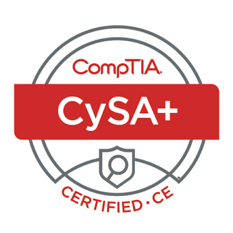

Certifications
Verify CYSA+ Verify Security+ Verify Project+
8570 Compliant/AIT Level II
Active TS/SCI Clearance | CYSA+ | Security+ | Air Force Veteran
Self motivated and experienced multidisciplinary professional with an active Top Secret/SCI clearance and a wide background in healthcare, military service, and technical assistance. Highest level certificate is CompTIA CYSA+ and currently pursuing additional education to further technical knowledge and information technology expertise by working towards a bachelor's degree in Information Technology.
Built a Desktop PC and created a Virtual Machine “Home Lab” using Oracle VM. The home lab includes Kali Linux, Parrot OS, and other distributions of Linux to gain familiarization with the different operating systems. The home lab is used during free time to develop and learn about new technologies and to practice new skills to further commit to self improvement.
Currently teaching myself HTML, CSS, and JavaScript to learn front end/web <p>development</p> .
Learned basic Linux commands on the different Linux distros to navigate and create directories and files as well as how to download and update software by only utilizing the terminal emulator instead of the GUI.
Practiced and gained familiarization using tools like nmap, ping, ip/ifconfig, arp, route, traceroute/tracert, pathping/mtr, netstat, nslookup/dig, whois, windump/tcpdump, netcat, and wireshark.
Currently utilize Udemy, TryHackMe, Coursera, Youtube, and Splunk Boss of the SOCs for self learning during free time.
Cyber Security Analyst |
Prime Technical Services/Leidos |
40 hrs. wk. |
Jan 2022 - May 2022 |
- Utilize Splunk Enterprise Security and OSINT to investigate alerts and create reports to assist customers and non customers/DoD with threat mitigation. - Investigate internal and external netflow and peak flow events with Endace, Wireshark, and, SiLK. - Monitor IAP network traffic and write internal reports to use when improving thresholds, IPS rules, and HBSS rules. |
|||
Help Desk Technician (remote position) |
Cooley/Keno Kozie |
40 hrs. wk. |
Sept 2021 - Dec 2021 |
- Utilize VMware Horizon and Citrix to proxy into the law firm's PCs to help troubleshoot day to day issues. - Create Client Matter folders, shared network drives, and reset user passwords with Active Directory. - Create tickets/incident numbers with Ivanti ticketing software. - Communicate with customers both via email and VoIP with Zeacom software. - Assist in setting up Firm issued mobile devices using MobileIron, InTune, and Exchange Admin Console. |
|||
Apex Systems Internship |
Vets2PM |
40 hrs. wk. |
May 2021 - Aug 2021 |
- Completed CompTIA Security+ training through Intellectual Point to gain proficiency in assessing the security posture of an enterprise environment, implement security solutions, comply with regulations and policies, and effectively respond to security events and incidents. - Participated in Security+ Labs to use knowledge in real world environments by utilizing Kali Linux as a virtual instance to learn, find, and exploit vulnerabilities on a Windows virtual machine. Learned the fundamentals of tools like Wireshark and Tcpdump packet analyzers, Metasploit Framework, Nmap, and Msfvenom. - Completed a 16 hour Security+ course on Apex's Percipio website while earning 20 badges for all Security+ topics/lessons. (Badges are posted on LinkedIn). |
|||
Integrated Avionics Technician |
United States Air Force |
40 hrs. wk. |
Aug 2017 - Aug 2021 |
- Responsible for supporting instructor and student pilots with safe and reliable aircraft by providing maintenance, troubleshooting, and operational checks on all electronic systems and components on the F-22 Raptor aircraft - Repaired, modified, installed, and performed routine maintenance on all Avionics systems with accuracy and with minimal assistance within budgeted or estimated time utilizing hand tools and soldering irons. - Updated aircraft hardware and software to ensure top of the line technological advances. - Documented and updated aircraft discrepancies after flights using IMIS and IMDS. - Manufactured and repaired aircraft wires and wire harness assemblies. - Utilized schematic diagrams to trace wire/wire harness routes. - Operated aerospace ground and test equipment to perform functional and continuity tests for electrical systems. |
|||
Western Governors University
Bachelors of Science Information Technology
Oct 2021 - Present
___
John F. Hodge High School
Saint James MO 65559
Aug 2013 - May 2017
Software: Splunk/Enterprise Security, Oracle VM/Horizon, Citrix, Ivante, Active Directory, Wireshark, OSINT, Regex, IMIS, Microsoft Office 365, Google Suite, Powerpoint, Zoom, Cisco Webex, MS Teams, Adobe Photoshop, Illustrator, XD
Operating Systems: Mac / Windows 10, Windows Server 2019/ Kali Linux/ Parrot OS
© 2022-2023 Ethan Ratcliff. All Rights Reserved.